Nu ska du få lära dig hur man kan få olika skript att köra beroende på vad som händer i programmet.
Vi ska göra en robot som ställer frågor och säger olika saker beroende på vad vi svarar. Tänk på program som du brukar använda där olika saker händer beroende var du klickar, till exempel spel som startar olika banor när du klickar på dem.
Precis som i den förra uppgiften ska vi börja med att remixa ett program.
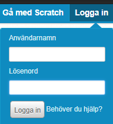
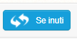
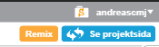
Vi kan nu koda som vi vill i det remixade projektet. I detta program finns redan några skript utplacerade. Vi ska nu lära oss hur vi kan få roboten att ställa frågor till oss.
Roboten kan just nu bara säga hej. För att få roboten att ställa en fråga använder du blocket "fråga What's your name? och vänta" ifrån rubriken Känna av.
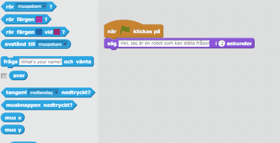
Dra sedan in två stycken "säg Hello! i 2 sekunder"-skript ifrån rubriken Utseende och lägg efter varandra under frågan. Ändra texten i det första skriptet till Hej.
Ta sedan "svar"-skriptet ifrån rubriken Känna av och sätt istället för texten i det andra skriptet.
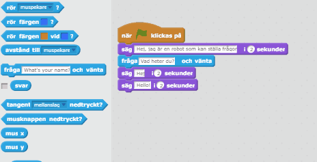
Bra jobbat! Nu har du en robot som kan säga hej till folk. Nu ska vi göra roboten lite mer avancerad!
Med hjälp av skriptet "om <> då" under rubriken Kontroll kan vi få roboten att säga olika saker beroende på vad vi svarat. Vi ska nu göra roboten lite mer personligt anpassad efter oss själva.
Lägg till "om <> då"-skriptet efter de andra skripten.
Lägg till ett "[] = []"-skript ifrån rubriken Operatorer inuti "om <> då"-skriptet.
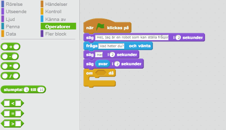
"[] = []"-skriptet säger åt roboten att jämföra om svaret som vi gav är lika med något annat.
Dra in ett "svar"-skript på vänstra sidan av "[] = []"-skriptet.
Skriv ditt eget namn på högersidan.
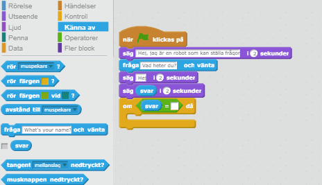
Nu kan vi få roboten att säga speciella saker till oss, som hon inte kommer säga till någon annan.
Dra in ett "säg Hello! i 2 sekunder"-skript innanför "om <> då"-skriptet.
Ändra texten till Det är du som har programmerat mig!
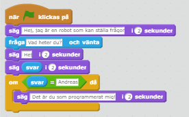
Superbra jobbat! Nu har du en robot som kan säga ett meddelande bara till dig. Andra personer som använder roboten kommer bara få ett hej tillbaka.
Nästa steg är nu att få roboten att säga helt olika saker baserat på vad du har svarat. Då är det bra att ha ett "om <> då annars"-skript.
Dra in en ny fråga efter dina tidigare frågor och ändra texten till Hur gammal är du?
Dra in ett "om <> då annars"-skript ifrån rubriken Kontroll.
Dra in ett "[] < []"-skript i "om <> då annars"-skriptet.
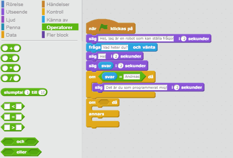
"[] < []"-skriptet säger åt roboten att jämföra om värdet på vänstersidan är mindre än det på högersidan.
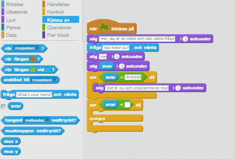
Skript som du lägger in i den övre delen av "om <> då annars"-skriptet kommer köras om man svarat att man är yngre än 13. Skript som du lägger in i den undre delen kommer köras om man svarar att man är 13 år eller äldre.
Dra in ett "säg Hello! i 2 sekunder"-skript i den övre delen och ändra texten till Då är du född 2005 eller senare
Dra in ett skript i den undre delen och ändra texten till Då är du född 2005 eller tidigare
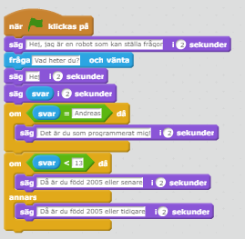
Bra jobbat! Nu har du en robot som kan svara på dina frågor. Känner du till några andra robotar som kan svara på dina frågor?